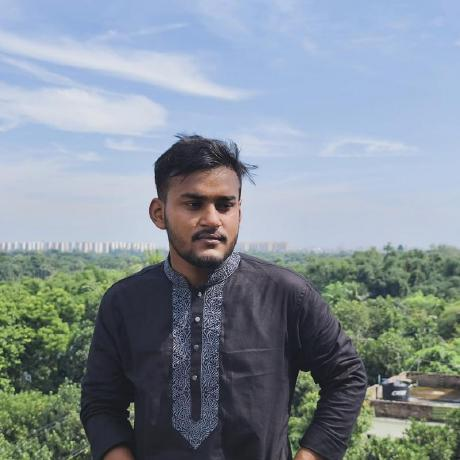

I'm a software engineering graduate of Daffodil International University (October 2026). I like work that sits between building products and understanding how models behave.
I write clean APIs and full-stack apps with ASP.NET Core and Spring Boot, and I research computer vision and medical image segmentation, caring as much about why a model fails as how well it scores.
Away from the keyboard I listen to a lot of music and take photographs.
Teaching models to understand Bangladeshi roads, where vehicles and conditions differ from standard datasets.
Exploring how segmentation models adapt to new scanners without the original training data.
Investigating prediction consistency and quality, not just headline accuracy.
Not just training models. Understanding why they work, when they fail, and how they can improve.
Music is on while I code, read papers and walk. Press play to start the visualizer, then see what I've really been playing.
People, skies and the green edges of Bangladesh. A good frame takes the same patience as good debugging. Tap a frame to enlarge it.